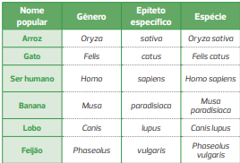
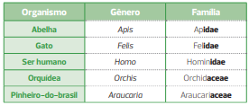
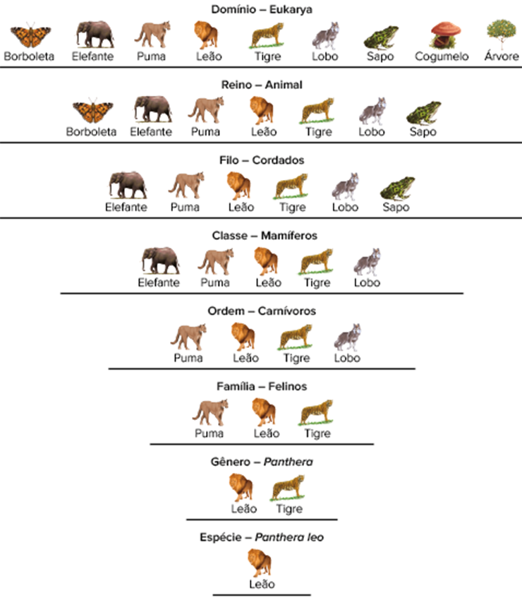

Golfinho (cerca de 2 m de comprimento) e peixes (a maioria dos peixes que aparecem na foto tem cerca de 10 cm) no oceano. Apesar das semelhanças, esses animais são classificados em grupos diferentes.
Existem diversas formas de classificação dos seres vivos. A classificação natural é uma delas e, diferentemente da classificação artificial, é fundamental e muito utilizada pelos cientistas, pois reflete as relações de parentesco e fornece informações a respeito da história evolutiva das espécies. O principal critério utilizado nos sistemas de classificação naturais é a semelhança morfológica e molecular. No entanto, isso é mais difícil do que parece, pois semelhanças podem ser resultado de adaptação ao mesmo ambiente, em vez de parentesco. Os golfinhos, por exemplo, têm nadadeiras, formato hidrodinâmico e vivem no meio aquático, como os peixes, mas na verdade são mamíferos. Essas semelhanças entre peixes e golfinhos não é resultado de parentesco evolutivo entre eles, mas sim de um processo conhecido como convergência adaptativa. Neste capítulo, vamos estudar como é feita a classificação dos seres vivos e quais são os critérios que devem ser utilizados para que sejam formados grupos cujos representantes apresentem relação de parentesco evolutivo entre si.
- Qual é a diferença entre o sistema natural e o artificial de classificação?
- O que é convergência adaptativa?
- Por que os vírus são excluídos dos sistemas de classificação?
Neste capítulo serão abordadas as habilidades EM13CNT202
A classificação dos seres vivos
No planeta Terra há uma imensa diversidade de seres vivos, que são tradicionalmente classificados pelo ser humano. Por exemplo, os animais podem ser classificados com relação ao ambiente em que vivem: aquáticos, como golfinhos e tartarugas, ou terrestres, como elefantes e jabutis. Essa forma de classificação, entretanto, é denominada artificial, pois não revela o grau de parentesco entre esses animais. O sistema de classificação que leva em conta o parentesco evolutivo entre as espécies é denominado natural. Em um sistema de classificação natural, golfinhos e elefantes são classificados no grupo de animais denominados mamíferos, enquanto tartarugas e jabutis são classificados no grupo de animais denominados quelônios.
Exemplos de sistemas de classificação artificial e natural. A. Golfinhos (o adulto tem cerca de 2 m de comprimento), de acordo com a classificação natural são denominados mamíferos e, segundo a classificação artificial, animais aquáticos. B. Jabuti (cerca de 50 cm de comprimento), de acordo com a classificação natural é denominado quelônio e, segundo a classificação artificial, animal terrestre.
Taxonomia e Sistemática são as áreas dedicadas à classificação natural dos seres vivos. A área da Biologia que identifica, nomeia e classifica os seres vivos é a Taxonomia (do grego taxis e nomos, que significam, respectivamente,
“arranjo” e “lei”). A Sistemática representa uma área mais ampla, pois além de incluir os estudos da Taxonomia, também estuda as relações de parentesco evolutivo (filogenia) entre as espécies.
O filósofo grego Aristóteles
(384-322 a.C.) foi um dos pioneiros na classificação dos seres vivos. O filósofo já dividia os seres vivos em grandes grupos formados por animais e vegetais. Ele demonstrava uma visão avançada para a época ao destacar a
importância da organização corporal dos seres vivos como critério para separá-los em grupos distintos. Aristóteles argumentava, por exemplo, que os golfinhos, apesar de apresentarem semelhança externa e viverem no mesmo
ambiente aquático que os peixes, deveriam ser classificados no grupo atualmente conhecido como mamíferos, devido à organização interna do seu corpo, como presença de respiração pulmonar, e ao fato de seus embriões desenvolverem-se
dentro do corpo materno.
Aristóteles foi pioneiro ao fazer observações relevantes, do ponto de vista da Biologia, sobre os animais e a encontrar respostas adequadas, sendo considerado o pai da Zoologia (ramo da Biologia
que estuda os animais). Seu discípulo Teofrasto (371-287 a.C.) descreveu cuidadosamente mais de 500 espécies de plantas, sendo considerado o pai da Botânica (ramo da Biologia que estuda as plantas).
A classificação
biológica moderna dos seres vivos teve início com os trabalhos de Carl von Linné (1707-1778), também conhecido como Lineu, em português, e Carolus Linnaeus, na forma latinizada. As ideias de Lineu sobre a classificação
dos seres vivos foram publicadas em 1735 no livro Systema naturae (Sistema natural).
Para Lineu, as características anatômicas eram mais adequadas para classificar os seres vivos, sendo utilizadas como critério principal
em seu sistema. Lineu agrupou, por exemplo, as plantas com base em sua forma e na estrutura das flores e dos frutos. Embora a classificação de Lineu fosse artificial, o sistema hierárquico de classificação e a nomenclatura
binomial, criados por ele, continuam sendo empregados, com algumas modificações, até os dias atuais.
Regras de nomenclatura biológica
Um dos grandes méritos de Lineu foi estabelecer um método de nomenclatura biológica dos seres vivos que é utilizado até hoje pelos taxonomistas. Esse método é importante, pois permite que cientistas de diferentes regiões, independentemente
da língua, possam utilizar as mesmas regras para nomear os seres vivos. Vejamos a seguir algumas dessas regras:
Os nomes científicos devem ser escritos em latim ou, se forem derivados de outras línguas, deverão ser
latinizados. A justificativa é que o latim é uma língua que não sofre alterações ao longo do tempo e era a língua utilizada pelas pessoas cultas na época de Lineu. Além disso, o idioma de nenhum país é privilegiado na nomenclatura
biológica. No caso da planta Hevea brasiliensis, conhecida popularmente como seringueira, o termo brasiliensis é a latinização da palavra brasileira, indicativa de que a espécie ocorre na flora do Brasil.
O nome científico
é duplo, ou seja, composto de duas palavras. O primeiro nome refere-se ao gênero e deve ser escrito sempre com inicial maiúscula. O segundo nome refere-se ao epíteto específico, um termo que especifica a espécie e deve
ser escrito sempre com inicial minúscula. No caso da espécie humana, cujo nome científico é Homo sapiens, que significa “humano sábio”, o termo Homo refere-se ao gênero, e sapiens, ao epíteto específico. Por atribuir dois
nomes a cada espécie, o sistema de Lineu ficou conhecido como nomenclatura binomial. Veja na página seguinte alguns exemplos de nomes científicos:
Exemplos da nomenclatura binomial
O nome científico deve ser destacado no texto em que aparece, seja em itálico ou sublinhado. Ao ser utilizado pela primeira vez no texto, o nome científico deve ser escrito por extenso, ou seja, não pode ser abreviado. Nas
demais vezes em que aparece, a parte genérica pode ser abreviada. Por exemplo, depois de ser citado no texto o nome científico Homo sapiens, podemos escrever H. sapiens nas próximas vezes em que a espécie for citada.
A nomenclatura de uma subespécie é trinomial, sendo necessário acrescentar um terceiro termo, que deve ser escrito com inicial minúscula ao lado do binômio da espécie. Por exemplo, Canis lupus familiaris é o nome científico
do cão doméstico, uma subespécie de Canis lupus.
O nome do subgênero de uma espécie, quando for necessário, deve ser indicado entre parênteses e com inicial maiúscula entre o nome do gênero e do epíteto específico.
Por exemplo, o mosquito que transmite a dengue é o Aedes (Stegomyia) aegypti, sendo Aedes o nome do gênero, Stegomyia o nome do subgênero e aegypti o nome do epíteto específico.
Categorias taxonômicas
No sistema de Lineu a categoria básica de classificação dos seres vivos é a espécie (do latim species, que significa “tipo”). A categoria taxonômica, ou táxon, imediatamente superior à espécie, em termos hierárquicos, foi denominada
gênero. Um gênero agrupa diferentes espécies que apresentam características comuns. Lineu agrupou gêneros semelhantes em uma mesma ordem, ordens semelhantes em uma mesma classe, e classes semelhantes em um mesmo reino.
Posteriormente foram criadas outras categorias taxonômicas, como família (entre gênero e ordem), filo (entre reino e classe) e domínio (acima de reino), além de outras.
De acordo com o Código Internacional de
Nomenclatura Zoológica e o Código Internacional de Nomenclatura Botânica, existem sete categorias taxonômicas obrigatórias: reino, filo, classe, ordem, família, gênero e espécie.
Ordem decrescente das categorias taxonômicas obrigatórias.
A nomenclatura das categorias superiores à espécie também segue certas regras. Por exemplo, o nome de uma família é determinado a partir do nome de um gênero importante que ela engloba, com o acréscimo do sufixo -idae, no caso da Zoologia, ou -aceae, no caso da Botânica. Veja os exemplos na tabela abaixo:
Exemplos de nomes de famílias
Com a aceitação das ideias evolutivas, as categorias taxonômicas passaram a ser interpretadas de uma outra maneira, para revelar o parentesco evolutivo entre os seres vivos. Dessa forma, espécies que pertencem ao mesmo gênero são filogeneticamente mais próximas (aparentadas) entre si do que espécies que pertencem a gêneros diferentes. Esse raciocínio vale para outras categorias taxonômicas, ou seja, gêneros que pertencem a uma mesma família também são mais aparentados entre si do que gêneros pertencentes a famílias diferentes.
Categorias taxonômicas dos seres vivos e a classificação do leão.
Conceito de espécie
Ainda não existe uma definição única e geral de espécie válida para todos os tipos de seres vivos. Muitos cientistas, inclusive, discutem se o termo espécie não seria uma criação arbitrária dos biólogos em sua tarefa de identificar
e classificar os seres vivos. Outros cientistas, entretanto, defendem que o conceito é importante, mas deve ser adequado e operacional, ou seja, deve permitir o reconhecimento inequívoco de cada espécie biológica presente
no planeta.
Lineu utilizou pioneiramente o termo espécie para se referir a um grupo de seres vivos que possuem determinadas características morfológicas típicas, ausentes em outros grupos, semelhantes a um tipo ideal
e imutáveis. Esse conceito é conhecido como conceito morfológico de espécie e leva em conta apenas aspectos físicos e morfológicos dos organismos.
O conceito mais utilizado de espécie na atualidade é o conceito biológico
de espécie, que foi proposto, em 1942, pelo biólogo alemão naturalizado estadunidense Ernst Mayr (1904-2005). Para esse cientista, espécie representa um grupo de populações cujos organismos são capazes de se cruzar, em
condições naturais, e gerar descendentes férteis, estando reprodutivamente isolados de organismos de outras espécies.
Com os avanços dos estudos filogenéticos nos últimos anos, surgiu o conceito filogenético de espécie,
segundo o qual espécie representa uma população ou conjunto de populações definidas por uma ou mais características derivadas, constituindo o menor agrupamento taxonômico reconhecível. Essa definição, diferentemente do
conceito tipológico e biológico de espécie, pode ser utilizada para todos os tipos de organismos do planeta, desde os que apresentam reprodução assexuada, como as bactérias, até para os já desaparecidos, como os fósseis.
Conceito de subespécie
Quando uma população biológica cresce e se espalha por diferentes ambientes próximos à área ocupada pela espécie, as subpopulações podem se modificar em decorrência de alterações genéticas (mutações) e de condições ambientais
diferentes, adaptando-se aos novos ambientes. Por exemplo, uma população de pássaros que vivia originalmente no continente pode espalhar-se por ilhas costeiras e encontrar hábitats e recursos peculiares, desenvolvendo características
adaptativas ajustadas para cada ambiente. Essas populações que diferem quanto a determinadas características são denominadas subespécies ou raças geográficas.
No caso do lobo, Canis lupus, por exemplo, os cientistas
acreditam que existem 32 subespécies, sendo 24 na América do Norte e oito na Eurásia. Acredita-se que essas subespécies surgiram a partir de uma população ancestral de Canis lupus. As diferenças entre elas referem-se a
tamanho corporal, cor da pelagem, forma do crânio, forma das orelhas e espessura dos dentes molares. Uma das espécies é o dingo, Canis lupus dingo, uma subespécie agressiva encontrada na Austrália; outra é o lobo eurasiático
(lobo comum), Canis lupus lupus, encontrado na Europa e em parte da Ásia; outra é o lobo-do-ártico, Canis lupus arctos, encontrado nas ilhas setentrionais do Canadá; e outra é o cachorro, que em algumas classificações deixou
de ser considerado uma espécie biológica, Canis familiaris, e passou a ser considerado uma subespécie doméstica de lobo, de nome científico Canis lupus familiaris.
Diferentes subespécies de Canis lupus. A. Dingo, Canis lupus dingo, encontrado na Austrália. Tamanho médio (comprimento): 1,3 m. B. Lobo eurasiático, Canis lupus lupus, encontrado na Europa e em parte da Ásia. Tamanho médio (comprimento): 1,5 m. C. Lobo-do-ártico, Canis lupus arctos, encontrado nas ilhas setentrionais do Canadá. Tamanho médio (comprimento): 1,3 m. D. Cachorro, Canis lupus familiaris. Tamanho médio (comprimento) do pastor alemão: 1,3 m.
Sistemática filogenética
Sistemática filogenética O sistema de classificação dos seres vivos mais aceito atualmente pela comunidade científica é a sistemática filogenética (do grego phylon e genos, que significam, respectivamente, "tribo" e "origem"),
também conhecida como Cladística (do grego klados, que significa "ramo"), que foi proposta pelo entomologista (cientista que estuda insetos) alemão Willi Hennig (1913-1976) na década de 1950. Nesse sistema, a ancestralidade
comum é o critério mais importante para classificar os organismos nas diferentes categorias taxonômicas.
A proposição fundamental da sistemática filogenética é que se uma novidade evolutiva, também conhecida como caráter
derivado, surgiu e se fixou em uma espécie, as espécies descendentes dela também apresentarão essa característica. Esse caráter que está presente em ancestrais anteriores à evolução do grupo é denominado caráter primitivo.
A presença de vértebras nos mamíferos, por exemplo, é um caráter primitivo, pois está presente no ancestral de todos os vertebrados. Já a presença de glândulas mamárias é um caráter derivado nos mamíferos, pois ocorre apenas
nos animais desse grupo e em nenhum outro tipo de vertebrado.
Na sistemática filogenética são utilizados diversos tipos de caracteres – anatômicos, fisiológicos, comportamentais e bioquímicos – para analisar as relações
evolutivas entre os seres vivos.
A escolha dos caracteres para determinação do parentesco entre espécies deve ser criteriosa, pois só devem ser utilizados caracteres ou estruturas homólogas. Estruturas homólogas são
herdadas de um ancestral comum ao grupo estudado e têm a mesma origem embrionária, ou seja, progridem da mesma maneira durante o desenvolvimento embrionário. Apesar de apresentarem a mesma origem embrionária, as estruturas
homólogas podem expressar funções bem distintas, como no caso dos membros anteriores dos mamíferos.
Estruturas homólogas nos mamíferos. Note que os membros anteriores desses animais são constituídos pelos mesmos ossos, indício de proximidade evolutiva entre eles.
A semelhança entre órgãos homólogos é explicada pela ancestralidade comum, mas as diferentes funções exercidas por eles são explicadas pelo processo conhecido como irradiação adaptativa ou divergência adaptativa. Nesse processo
ocorre a diversificação de órgãos homólogos decorrente da adaptação a modos de vida e ambientes diferentes. Uma divergência adaptativa ocorre quando uma população coloniza diversos hábitats e se adapta às diferentes condições
ecológicas desses ambientes.
As estruturas análogas não podem ser utilizadas como caracteres nos cladogramas, pois não revelam parentesco evolutivo entre os organismos. As estruturas análogas têm a mesma função, mas
diferentes origens evolutivas, e aparecem em diferentes grupos de organismos como resultado das adaptações a modos de vida semelhantes. Um exemplo é a nadadeira dos golfinhos e a dos tubarões.
Exemplo de estruturas análogas. A nadadeira de golfinhos e a de tubarões têm a mesma função, porém apresentam diferenças quanto à estrutura interna e à origem evolutiva.
O processo responsável pelo surgimento de estruturas análogas é conhecido como convergência adaptativa ou evolução convergente. Nesse processo, organismos não aparentados apresentam semelhanças externas, morfológicas ou comportamentais resultantes de uma mesma pressão seletiva exercida pelo ambiente onde vivem. Embora as analogias não sejam utilizadas na determinação do parentesco evolutivo, seu estudo é importante porque revela a adaptação dos seres vivos aos diferentes ambientes.
A embriologia comparada – estudo comparado do desenvolvimento embrionário – é uma ferramenta muito utilizada na sistemática filogenética. Semelhanças durante o desenvolvimento embrionário geralmente são fortes evidências de parentesco evolutivo, ou seja, quanto maior a semelhança entre os embriões, maior o parentesco.
Os dados obtidos em estudos de Cladística são úteis para entender as relações filogenéticas entre os organismos estudados. Com essa metodologia, os biólogos inserem as espécies em grupos denominados clados, nos quais são incluídos
uma espécie ancestral e todos os descendentes.
A representação esquemática da relação de parentesco evolutivo entre os organismos estudados é feita por meio de árvores filogenéticas, sendo a mais comum o diagrama com
ramos denominado cladograma. Nele, a base é denominada raiz, e os pontos de onde partem dois ramos (bifurcações) são denominados nós ou nódulos. Cada nó representa um ancestral comum hipotético para todos os ramos que estiverem
acima dele. Os grupos que descendem desse ancestral são colocados nos ápices dos ramos e compõem os terminais.
Representação esquemática genérica de um cladograma.
Em todos os cladogramas os nós representam eventos de cladogênese (do grego klados e genos, que significam, respectivamente, “ramos” e “origem”), fenômeno em que uma espécie dá origem a duas linhagens. O acúmulo de diferenças
em uma população ao longo do tempo, que origina uma nova espécie, é denominado anagênese (do grego ana e genos, que significam, respectivamente, “para cima” e “origem”).
No cladograma, um grupo monofilético (do grego
mono e phylon, que significam, respectivamente, “um” e “tribo”) é aquele baseado em homologias derivadas, ou seja, novidades evolutivas. Um grupo monofilético inclui o ancestral comum e todos os descendentes. Em outras
palavras, é um grupo completo de espécies aparentadas ou um ramo da árvore da vida.
Um grupo parafilético (do grego para e phylon, que significam, respectivamente, “ao lado” e “tribo”) tem como base homologias ancestrais,
portanto não inclui todos os descendentes do ancestral comum entre os organismos do grupo. Um exemplo é o grupo dos répteis, pois é baseado em características ancestrais dos amniotas.
Representação esquemática genérica de um cladograma com grupos parafilético, polifilético e monofilético.
Já um grupo polifilético (do grego polys e phylon, que significam, respectivamente, “muito” e “tribo”) é baseado em características não homólogas, portanto inclui organismos descendentes de ancestrais independentes, sem ancestral
comum entre os organismos do grupo. É o caso dos protistas.
Os taxonomistas concordam que grupos parafiléticos e polifiléticos são inapropriados como unidades taxonômicas, porém em vários casos eles ainda aparecem
nas árvores filogenéticas, pois alguns organismos não foram analisados filogeneticamente. À medida que erros nas classificações antigas são detectados, os grupos parafiléticos e polifiléticos são eliminados e a nomenclatura
taxonômica é revisada.
Questão resolvida
1
PUC-SP 2017 A diversificação evolutiva é um fenômeno biológico que se encontra refletido na composição molecular dos organismos atuais. A hemoglobina, por exemplo, é uma das moléculas cujas diferenças na composição de aminoácidos são utilizadas para se deduzir relações evolutivas entre espécies. Considere as espécies animais A, B, C, D e E, cujas moléculas de hemoglobina possuam diferenças na composição de aminoácidos. Em relação à hemoglobina da espécie A, as hemoglobinas das espécies B, C, D e E possuem 45, 8, 67 e 32 aminoácidos diferentes, respectivamente. Sendo assim, assinale o diagrama que melhor representa as relações evolutivas entre essas espécies.
Resolução:
Alternativa: B
Um cladograma pode ser construído com base em diversos tipos de caracteres, dentre eles os bioquímicos. A sequência, o número e os tipos de aminoácidos que formam uma determinada proteína podem ser utilizados
para analisar a relação de parentesco entre diferentes espécies de seres vivos. Quanto maior for a semelhança bioquímica entre as espécies, maior será a proximidade filogenética entre elas. Ao comparar a proteína hemoglobina
da espécie A com as hemoglobinas das outras espécies (B, C, D e E), observa-se que a espécie filogeneticamente mais próxima da espécie A é a espécie C, pois existem apenas 8 aminoácidos diferentes entre elas. Logo após,
vem a espécie E, com 32 aminoácidos diferentes; depois a espécie B, com 45 aminoácidos diferentes; e finalmente a espécie filogeneticamente mais distante da espécie A é a espécie D, pois existem 67 aminoácidos diferentes
entre elas. Dessa forma, o cladograma que indica a relação de parentesco evolutivo entre essas espécies seria o apresentado na alternativa B.
Representação esquemática de uma euglena.
Classificação dos seres vivos após Lineu
A classificação científica apresentada por Lineu, em 1735, considerava os seres vivos divididos em dois reinos: reino Animal e reino Vegetal. Lineu incluiu no reino Vegetal todos os organismos fotossintetizantes procariontes,
como as cianobactérias, e eucariontes, como plantas e algas, e também as bactérias heterótrofas e os fungos, considerados plantas aclorofiladas. No reino Animal estavam incluídos os organismos heterotróficos que
apresentam movimento e que capturam e ingerem alimento. Esse grupo incluía os protozoários, considerados animais unicelulares, e os metazoários, agrupados em animais multicelulares.
Uma das limitações do sistema
de dois reinos de Lineu refere-se aos organismos considerados intermediários entre plantas e animais.
O exemplo mais importante é o das euglenas, organismos unicelulares eucariontes fotossintetizantes que se
deslocam ativamente no ambiente. Na época de Lineu, a fotossíntese era considerada exclusiva das plantas, e a locomoção, exclusiva dos animais. Dessa forma, as euglenas eram consideradas plantas, pelos botânicos,
e animais, pelos zoólogos.
Ernst Haeckel (1834-1919), um grande defensor das ideias de Darwin, foi um dos primeiros cientistas que propuseram a criação de mais um reino de seres vivos, o que quebrou a dicotomia
animal versus vegetal existente nos sistemas vigentes até então. Ele propôs, em 1866, um
terceiro reino de seres vivos, o reino Protista, e apresentou as relações evolutivas entres os seres vivos por meio de uma árvore da vida, construída a partir da visão darwiniana da evolução das espécies.
O reino Protista,
proposto por Haeckel, era composto de algas unicelulares, protozoários, esponjas-do-mar, mixomicetos e todas as bactérias, incluídas em um grupo denominado Monera. Em seu sistema de classificação de três reinos, as algas
pluricelulares e os fungos eram agrupados no reino Vegetal.
Esse sistema de três reinos de Haeckel revelou falhas quando as diferenças entre células procarióticas e eucarióticas se tornaram mais conhecidas, com o desenvolvimento
da Biologia e do microscópio eletrônico no início do século XX. Além disso, a classificação das esponjas-do-mar no reino Protista tornou-se inaceitável, uma vez que esses organismos compartilham diversas características
com os animais.
Em 1937, o biólogo francês Édouard Chatton (1883-1947) chamou a atenção dos cientistas para o fato de as bactérias apresentarem células procarióticas, ou seja, sem núcleo e sem organelas membranosas.
Essa característica tornava as bactérias diferentes de todos os demais seres vivos com células eucarióticas, o que levou diversos biólogos a propor a inclusão das bactérias em um reino exclusivo, o reino Monera (nome utilizado
por Ernst Haeckel para se referir às bactérias, classificadas por ele no reino Protista).
Em 1938, e depois em 1956, o biólogo estadunidense Herbert Faulkner Copeland (1902-1968) sugeriu a divisão dos seres vivos em
quatro reinos: Animalia (animais), Metaphyta (plantas), Protista (protozoários, algas e fungos) e Monera (bactérias). Nesse sistema, Copeland procurou valorizar as diferenças entre procariontes e eucariontes, além da existência
ou não de tecidos na organização do corpo. Diferentemente de Haeckel, Copeland inseriu os poríferos no reino Animal e retirou os fungos do reino Vegetal, colocando-os no reino Protista. Um dos principais problemas desse
sistema é o reino Protista, que mais parece um grupo formado apenas para incluir todos os seres vivos que foram excluídos dos reinos Monera, Metaphyta e Animalia. Dessa forma, o reino Protista é formado por organismos muito
diferentes entre si, como fungos, algas e protozoários, o que faz com que perca a unidade e a clareza dos critérios de classificação.
Classificação dos cincos reinos
Diante dos problemas observados na classificação dos seres vivos em quatro reinos, especialmente com o reino Protista, o biólogo estadunidense Robert Harding Whittaker (1920-1980) propôs, em 1959, que os seres vivos deveriam
ser divididos em cinco reinos, colocando os fungos em um reino separado dos demais seres vivos, denominado reino Fungi. Em 1969, Whittaker apresentou uma versão mais completa e detalhada da classificação dos seres vivos
nos seguintes reinos: Monera, Protista, Plantae, Animalia e Fungi.
Nessa classificação de cinco reinos, Whittaker considerou os seguintes níveis de organização corporal: unicelular procarionte (reino Monera), unicelular
eucarionte (reino Protista) e pluricelular ou multinucleado eucarionte (reinos Plantae, Animalia e Fungi). Além disso, o cientista considerou três tipos de nutrição nos organismos pluricelulares ou multinucleados, que seriam
responsáveis pela divisão desses organismos em três reinos: reino Fungi, em que a nutrição ocorre por absorção de nutrientes; reino Plantae, em que a nutrição ocorre por fotossíntese; e reino Animal, em que a nutrição ocorre
por ingestão de nutrientes.
Representação esquemática adaptada da classificação dos seres vivos em cinco reinos.
O próprio cientista Whittaker comentou algumas dificuldades de sua proposta de divisão dos seres vivos em cinco reinos. Uma delas é a distinção entre unicelulares e pluricelulares, pois as clorofíceas (algas verdes), por exemplo,
podem ser unicelulares ou pluricelulares, o que fez o cientista separar os dois grupos de algas clorofíceas em reinos diferentes: as unicelulares ficaram no reino Protista e as pluricelulares no reino Plantae. Além disso,
Whittaker afirma que o reino Protista é polifilético, e não monofilético, pois é formado por um complexo grupo de seres vivos que têm diferentes origens evolutivas. Mesmo com todas essas deficiências, o sistema de cinco
reinos foi o mais utilizado por diversos anos.
Em 1982, as biólogas estadunidenses Lynn Margulis (1938-2011) e Karlene Schwartz (1936-) publicaram o livro Cinco reinos, no qual reconheceram e modificaram o sistema
de cinco reinos proposto por Whittaker e definiram melhor os limites do reino Protista. Para as biólogas, todas as algas, independentemente do tamanho e número de células, deveriam ser incluídas no reino Protista. A seguir
serão apresentadas as principais características presentes na maioria dos representantes de cada um dos cinco reinos de seres vivos.
Reino Monera (do grego moneres, que significa “único”): formado por organismos que
apresentam células procarióticas, ou seja, que não têm núcleo organizado nem organelas membranosas, como mitocôndrias e cloroplastos. Esse grupo inclui bactérias, como as cianobactérias, e as arqueas. Muitos organismos
são heterótrofos, outros são autótrofos (quimiossintetizantes ou fotossintetizantes) e alguns são mixotróficos. Praticamente todos os organismos desse reino apresentam parede celular, com peptideoglicanos nas bactérias
e sem peptideoglicanos nas arqueas. Atualmente sabemos que esse grupo é possivelmente parafilético, pois as arqueas são mais próximas dos eucariotos que das bactérias
Exemplos de organismos do reino Monera. A. Bactéria do gênero Clostridium. Tamanho: de 1,5 a 20 μm de comprimento; B. Cianobactéria do gênero Spirulina. Tamanho: 1 mm de comprimento.
Reino Protista (do grego protistos, que significa “primeiro de todos”): formado por organismos eucariontes, ou seja, que apresentam núcleo organizado e organelas membranosas nas células, com ou sem parede celular, com ou sem cloroplastos, unicelulares ou pluricelulares, autótrofos, heterótrofos ou mixotróficos e sem tecidos diferenciados. Nesse grupo estão incluídos os protozoários, as algas (uni e pluricelulares) e os mixomicetos (organismos que pertenciam anteriormente ao reino Fungi). Avanços na sistemática de eucariotos levaram o reino Protista a sucumbir, pois ele certamente é um grupo polifilético. Alguns grupos de protistas são mais relacionados aos animais, fungos ou plantas do que a outros protistas. Dessa forma, várias linhagens de protistas atualmente são reconhecidas como reinos.
Exemplos de organismos do reino Protista. A. Protozoário de água doce (Amoeba proteus). Tamanho médio: 0,2 mm de diâmetro; B. Alga vermelha marinha (Gigartina pistillata). Tamanho médio: 20 cm de altura.
Reino Plantae: formado por organismos eucariontes, com parede celular de celulose, pluricelulares, autótrofos fotossintetizantes (presença de cloroplastos) e com tecidos diferenciados. A meiose é espórica – ou seja, produz esporos –, e os organismos apresentam alternância de gerações haploide (gametófito) e diploide (esporófito). Nesse grupo estão incluídas todas as plantas, como musgos, samambaias, pinheiros e angiospermas (plantas com frutos). Uma característica exclusiva desse grupo é a presença de embriões protegidos e nutridos por tecido materno, característica ausente em algas, que, dessa forma, não foram incluídas nesse grupo.
Exemplos de organismos do reino Plantae. A. Musgo do gênero Polytrichum. Tamanho médio: 20 cm de altura.
Reino Fungi: formado por organismos eucariontes, com parede celular de quitina, unicelulares ou pluricelulares, haploides e heterótrofos por absorção (sem cloroplastos). Os pluricelulares são formados por filamentos denominados hifas, que não constituem tecidos verdadeiros. Ocorre meiose zigótica para formar propágulos resistentes, denominados esporos. Nesse grupo estão incluídos os mofos, as leveduras, os cogumelos e as orelhas-de-pau.
Exemplos de organismos do reino Fungi. A. Cogumelos da espécie Amanita muscaria. Tamanho médio: chapéu com 10 cm de diâmetro; B. Orelhas-de-pau crescendo no tronco de uma árvore. Tamanho médio (comprimento): 10 cm.
Reino Animalia: formado por organismos eucariontes, sem parede celular, pluricelulares, diploides, heterótrofos por ingestão (ingerem moléculas orgânicas presentes em outros seres vivos) e com tecidos diferenciados. Nesse grupo estão incluídos todos os animais, desde os mais simples, como as esponjas, até os mais complexos, como os vertebrados (peixes, répteis e mamíferos). Uma característica exclusiva dos animais é a presença da fase embrionária denominada blástula, uma esfera celular preenchida por líquido e revestida pela blastoderme.
Exemplos de organismos do reino Animalia. A. Colônia de esponjas-do-mar (Callyspongia siphonella, animais do grupo dos poríferos). Tamanho médio: 60 cm de altura; B. Coalas (mãe e filhote), animais do grupo dos mamíferos marsupiais. Tamanho médio: 70 cm de altura (adulto).
Classificação dos três domínios
A partir da década de 1970, foram analisados os genes responsáveis pela produção de RNA ribossômico (RNAr), um tipo de RNA presente em todos os seres vivos. Com base nesses estudos, Carl Richard Woese (1928-2012) e colaboradores
propuseram, em 1977, a separação das bactérias em dois grupos distintos: o das arqueobactérias (do grego arkhe, que significa “primitivo”) e o das eubactérias (do grego eu, que significa “verdadeiro”). Dessa forma, Woese
e colaboradores dividiram os seres vivos em seis reinos: Eubacteria, Archaebacteria, Protista, Fungi, Animalia e Plantae.
Em 1990, Woese e colaboradores, com base em novos estudos moleculares, propuseram formalmente
uma categoria taxonômica superior a reino e dividiram os seres vivos em três domínios: Bacteria, Archaea e Eukarya. Nessa nova proposta, o termo arqueobactérias foi substituído por arqueas, e o termo eubactérias por bactérias,
pois esses procariontes são muito diferentes entre si em relação à estrutura, bioquímica e fisiologia. No domínio Eukarya estão incluídos os reinos nos quais se distribuem protozoários, algas, plantas, fungos e animais
Os vírus não foram incluídos em nenhum sistema de classificação vigente, pois são acelulares e não apresentam metabolismo próprio, características fundamentais para a organização dos seres vivos nos diferentes grupos.
Representação esquemática adaptada da classificação dos seres vivos em três domínios: Bacteria, Archaea e Eukarya.
Uma conclusão importante da proposta de três domínios está no fato de que as arqueas estão mais intimamente relacionadas aos eucariontes, pois têm um ancestral comum mais recente com esse grupo, do que com as bactérias, cujo ancestral comum é mais antigo. Novos estudos têm sido realizados e têm fortalecido cada vez mais a proposta de divisão dos seres vivos em três domínios.
1
Cite três regras de nomenclatura biológica.
2
De acordo com o Código Internacional de Nomenclatura Zoológica e o Código Internacional de Nomenclatura Botânica, existem sete categorias taxonômicas obrigatórias. Cite, em ordem crescente, quais são essas categorias.
3
Qual é o conceito biológico de espécie?
4
A figura abaixo representa uma proposta de classificação dos seres vivos.
a)
Que domínios são indicados em A, B e C?
b)
Que reinos de seres vivos são indicados em I, II e III?
1
UEL 2020 As primeiras tentativas de classificar os organismos com base em suas similaridades estruturais começaram na Grécia Antiga e lançaram as baes da sistemática atual.
Sobre a classificação biológica e
as categorias taxonômicas, assinale a alternativa correta
- Entre os estudiosos da classificação natural, Aristóteles sugeriu que o nome científico de todo animal deveria ser composto de duas palavras
- Uma característica derivada, compartilhada por dois ou mais táxons e por seu ancestral comum mais recente, é denominada plesiomorfia.
- Dois organismos classificados como pertencentes à categoria taxonômica de ordem pertencem também à mesma classe
- O primeiro a desenvolver um método de classificação das espécies baseado na ancestralidade evolutiva foi o naturalista sueco Carl Linné.
- Anisocerus scopifern e Onychocerus scopifer são duas espécies que pertencem à mesma categoria taxonômica de gênero.
2
UFPR 2020 Os sistemas de classificação dos seres vivos mudaram ao longo do tempo. Partindo de uma situação em que os seres vivos eram imutáveis, como pensava Lineu, para outra em que se percebem as alterações ao longo do tempo, o conceito de espécie foi sendo alterado. Os critérios utilizados nos sistemas de classificação, em ordem cronológica, são:
- nomenclatura binomial, fisiologia celular e isolamento reprodutivo
- semelhanças anatômicas, biologia molecular e homologia de órgãos.
- fisiologia celular, homologia de órgãos e nomenclatura binomial
- homologia de órgãos, semelhanças anatômicas e biologia molecular.
- semelhanças anatômicas, isolamento reprodutivo e biologia molecular.
3
UEPG-PR 2020 Os biólogos agrupam os seres vivos de acordo com as regras de nomenclatura e classificação, utilizando-se dos critérios taxonômicos e filogenéticos. Entre os estudiosos da classificação, destaca-se Karl Von
Linné (1707-1778), também conhecido como Lineu. Suas ideias sobre classificação biológica foram publicadas no livro Systema Naturae. Considerando os aspectos de Taxonomia e Sistemática, assinale o que for correto.
01.Lineu ponderava que critérios de semelhança entre os organismos devem ser o ponto de partida de todas as classificações. Dessa forma, espécies de um mesmo gênero são mais aparentadas entre si do que com espécies
de outros gêneros.
02. O sistema de nomenclatura de espécies criado por Lineu ficou conhecido por nomenclatura binomial. Este sistema é utilizado até os dias de hoje e, segundo as regras internacionais de nomenclatura, a primeira
palavra deve indicar o gênero (escrita com inicial maiúscula) e a segunda, o epíteto específico (com inicial minúscula). Ambas devem ser escritas em itálico ou sublinhado, por exemplo, Homo sapiens.
04. No sistema atual de classificação, não são consideradas válidas as seguintes categorias taxonômicas: Classe e Ordem
08. De acordo com as regras internacionais de nomenclatura, o nome das famílias dos animais recebe o sufixo “idae” como, por exemplo, Felidae. Já para as plantas, para a designação de famílias, utiliza-se, em
geral, a terminação “aceae” como, por exemplo, Rosaceae.
4
Uece 2019 Estima-se que até 100 milhões de diferentes espécies vivas dividem este mundo com você. Toda essa diversidade é classificada em categorias taxonômicas hierárquicas. Assinale a opção que corresponde às principais categorias taxonômicas em ordem decrescente de hierarquia.
- Domínio – reino – filo – ordem – classe – família – gênero – espécie.
- Espécie – gênero – família – classe – ordem – filo – reino – domínio.
- Domínio – reino – filo – classe – ordem – família – gênero – espécie.
- Espécie – gênero – família – ordem – classe – filo – reino – domínio.
5
Unicamp-SP 2017 O cladograma abaixo representa relações evolutivas entre membros da Superfamília Hominoidea, onde se observa que
- homens e gibões (Hylobatidae) não possuem ancestral comum
- homens, gorilas (Gorilla) e orangotangos (Pongo) pertencem a famílias diferentes.
- homens, gibões e chimpanzés (Pan) possuem um ancestral comum.
- homens, orangotangos (Pongo) e gibões (Hylobatidae) são primatas pertencentes à mesma família.